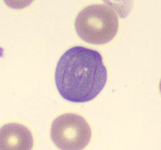
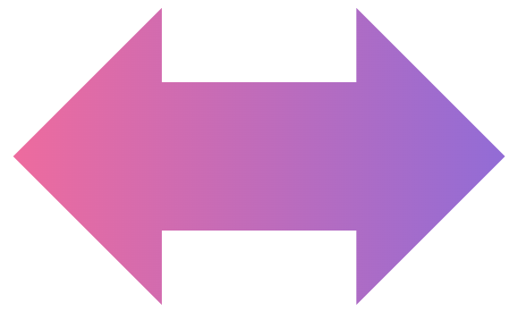
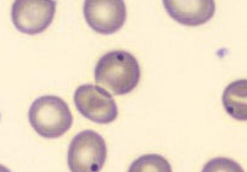
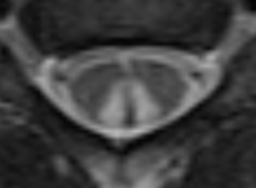
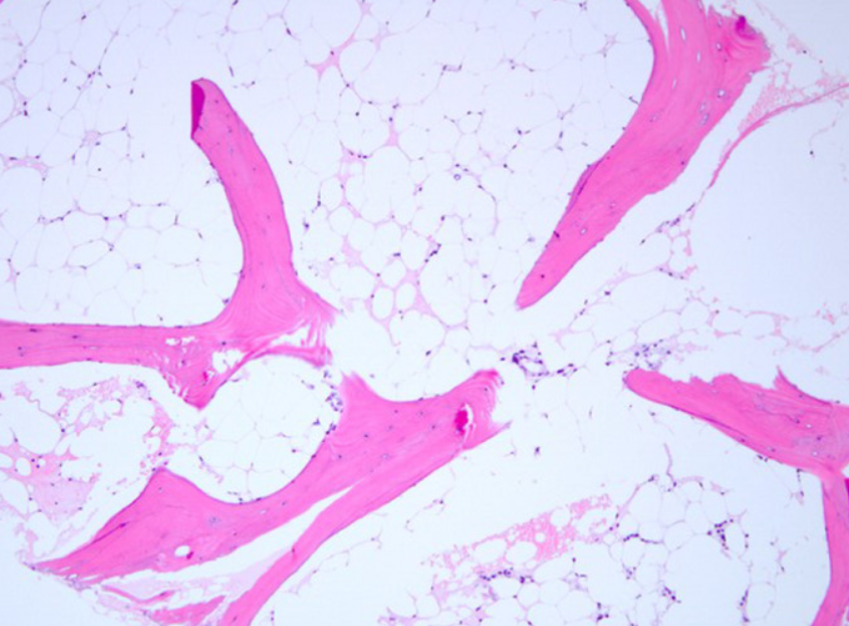
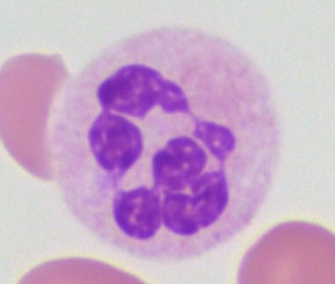
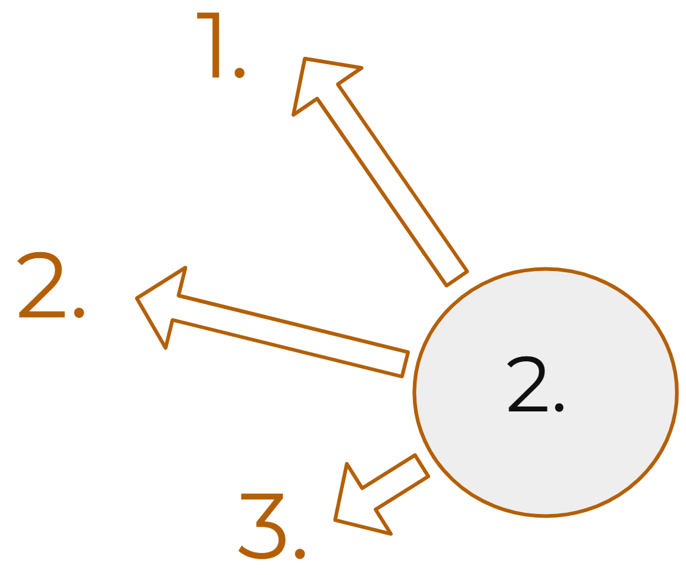
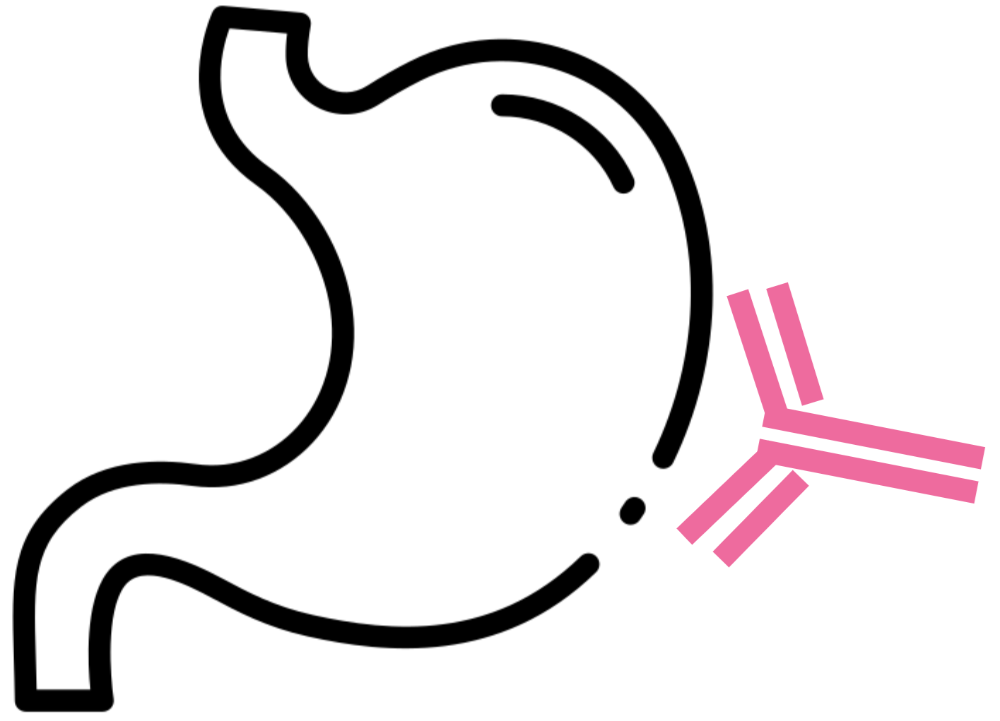
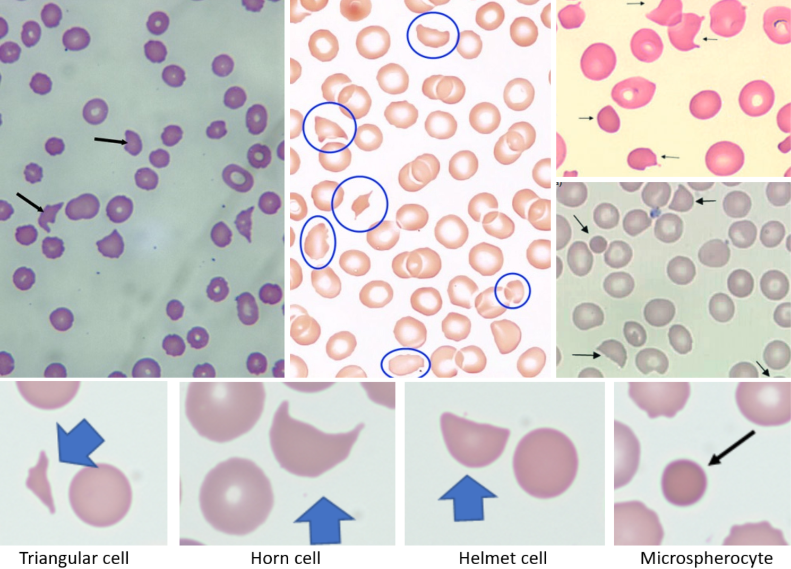

кольца Кебота

Ядерно-цитоплазматическая диссинхрония (асинхрония)

тельца Хауэлла-Жолли
Бласты долго сидят в ККМ при нарушениях синтеза ДНК

Фуникулярный миелоз

Аплазия ККМ
Анализы при ЖДА
1. ретикулоциты ▼
2. МСV, MCH ▼
3. анизоцитоз, тромбоцитоз
3. ферритин ▼, сатурац. Tf ▼, ОЖСС ▲, sTfR ▲
2. МСV, MCH ▼
3. анизоцитоз, тромбоцитоз
3. ферритин ▼, сатурац. Tf ▼, ОЖСС ▲, sTfR ▲

3 части гемоглобина: Fe, кольцо, цепи

Гиперсегментация нейтрофилов

Причины недостаточности ККМ:
1. Врождённые (ан. Фанкони, врожд. дискератоз)
2. Приобретённые апластические анемии (радиация, токсины, аутоимм.)
3. Другие - инфильтрация/ фиброз ККМ, обратимое угнетение ККМ
1. Врождённые (ан. Фанкони, врожд. дискератоз)
2. Приобретённые апластические анемии (радиация, токсины, аутоимм.)
3. Другие - инфильтрация/ фиброз ККМ, обратимое угнетение ККМ

Пернициозная анемия - аутоиммунное поражение слизистой желудка и фактора Касла
Причины #1 ЖДА, деф. В9, В12
ЖДА - хроническая кровопотеря🚩
В9 - мальабсорция и алкоголь
В12 - пернициозная анемия
В9 - мальабсорция и алкоголь
В12 - пернициозная анемия
Причины ЖДА
1. #1 - хронич. кровопотеря (опухоли🚩, язвы, НПВП-гастопатия/энтеропатия, дивертикул Меккеля и пр.)
2. плохое питание, проблемы с желудком (гастрит, резекция, приём ИПП и пр.), мальабсорбция (целиакия, б. Крона, СИБР, бариатрия и пр.)
3. ▲утилизация(беременность,лактация и пр)
4. наследств.(атрансферринемия,IRIDA и пр)
2. плохое питание, проблемы с желудком (гастрит, резекция, приём ИПП и пр.), мальабсорбция (целиакия, б. Крона, СИБР, бариатрия и пр.)
3. ▲утилизация(беременность,лактация и пр)
4. наследств.(атрансферринемия,IRIDA и пр)
Причины деф. В12

Причины деф. В9

Причины сидеробластных анемий
1. Х-сцепл. дефицит синтазы δ-аминолевулиновой кислоты
2. отравление Pb
3. дефицит B6 и лекарства, нарушающие метаболизм В6 (изониазид и пр.)
4. алкоголь
5. миелодиспластические неоплазии (МДН)
2. отравление Pb
3. дефицит B6 и лекарства, нарушающие метаболизм В6 (изониазид и пр.)
4. алкоголь
5. миелодиспластические неоплазии (МДН)
Причины приобретённых апластических анемий
1. радиация
2. токсины, лекарства (бензол, цитостатики)
3. вирусы
4. аутоиммунные (СКВ и пр.)
2. токсины, лекарства (бензол, цитостатики)
3. вирусы
4. аутоиммунные (СКВ и пр.)
Примеры наследственных поражений ККМ
1. анемия Фанкони
2. врождённый дискератоз
3. анемия Даймонда-Блекфена
4. синдром Швахмана-Даймонда
2. врождённый дискератоз
3. анемия Даймонда-Блекфена
4. синдром Швахмана-Даймонда
Причины гемолитических анемий
I. наследственные
1.мембранопатии (б. Минковского-Шоффара и пр)
2.Hb-патии (HbS и пр.)
3.ферментопатии (деф. глюкоза-6-Ф дегидрогеназы и пр.)
II. приобретённые
1. иммунные
2. неиммунные
1.мембранопатии (б. Минковского-Шоффара и пр)
2.Hb-патии (HbS и пр.)
3.ферментопатии (деф. глюкоза-6-Ф дегидрогеназы и пр.)
II. приобретённые
1. иммунные
2. неиммунные
Механизм иммунных гемолитических анемий
Гиперчувств. II по Gell-Coombs:
IgG присоединяются к эритроцитам
и запускают 3 разрушительных механизма:
● комплемент,
● фагоцитоз (IgG являются опсонинами),
● АЗКЦ
IgG присоединяются к эритроцитам
и запускают 3 разрушительных механизма:
● комплемент,
● фагоцитоз (IgG являются опсонинами),
● АЗКЦ
Причины эозинофилии
1. аллергии
2. глисты
3. неоплазии
4. с. Черджа-Стросс
5. некоторые первичные иммунодефициты
6. надпочечниковая недостаточность
2. глисты
3. неоплазии
4. с. Черджа-Стросс
5. некоторые первичные иммунодефициты
6. надпочечниковая недостаточность
В12 является кофактором...
1. метионин синтазы
2. мутазы метилмалоновой кислоты
2. мутазы метилмалоновой кислоты
Стадии ОПГА
1. рефлекторная - гиповолемическая нормоцитемия
2. гидремическая - номроволемическая олигоцитемия
3. костномозговая (через 3-5 дней) - гиперрегенерация, иногда гипохромия
2. гидремическая - номроволемическая олигоцитемия
3. костномозговая (через 3-5 дней) - гиперрегенерация, иногда гипохромия
Что такое АЗКЦ
антителозависимая клеточная цитотоксичность:
Fc-фрагмент IgG прикрепляется к Fcγ-рецептору (CD16) на поверхности NK и активирует NK
Fc-фрагмент IgG прикрепляется к Fcγ-рецептору (CD16) на поверхности NK и активирует NK
Синдромы ЖДА
1. анемический
2. сидеропенический
2. сидеропенический
Синдромы деф. В9
1. анемический
2. ЖКТ, напр. глоссит Мёллера-Хантера
2. ЖКТ, напр. глоссит Мёллера-Хантера
Синдромы деф. В12
1. анемический
2. ЖКТ, напр. глоссит Мёллера-Хантера
3. неврологический, напр. фуникулярный миелоз
2. ЖКТ, напр. глоссит Мёллера-Хантера
3. неврологический, напр. фуникулярный миелоз
Синдромы апластической анемии
1. анемический
2. геморрагический
3. иммунодефицит и инфекции
2. геморрагический
3. иммунодефицит и инфекции
Синдром гемолиза
1. лимонная желтуха, тёмные моча и кал
2. жёлчные камни при хроническом гемолизе
3. ▲ билирубин, ▲ ЛДГ, ▼ гаптоглобин
2. жёлчные камни при хроническом гемолизе
3. ▲ билирубин, ▲ ЛДГ, ▼ гаптоглобин
Опасности внутрисосудистого гемолиза
1. гемоглобинурия и острый канальцевый некроз
2. вазоконстрикция и риск тромбоза (из-за связывания NO и запуска воспаления)
2. вазоконстрикция и риск тромбоза (из-за связывания NO и запуска воспаления)
Причины АХЗ
1. хронич. микробное воспаление (напр. туберкуллёз)
2. аутоиммунные/ аутовоспалительные болезни
3. опухоли
4. ХСН, метаболический синдром и пр.
2. аутоиммунные/ аутовоспалительные болезни
3. опухоли
4. ХСН, метаболический синдром и пр.
Сидеропенический синдром
1. проблемы кожи, волос, ногтей
2. проблемы слизистых, напр. с. Пламмера-Винсона
3. патосмия, патофагия (лат. pica)
2. проблемы слизистых, напр. с. Пламмера-Винсона
3. патосмия, патофагия (лат. pica)
Названия В6, В9, В12
В6 -пиридоксин
В9 - фолат
В12 - кобаламин
В9 - фолат
В12 - кобаламин
Анализы при деф.В12
1. ретикулоциты ▼
2. МСV, MCH ▲
3. мазок - макроовалоцитоз, гиперсегментация нейтрофилов, тельца Х-Ж, кольца Кебота, базофильная пунктация
4. в ККМ - мегалобласты
5. могут быть лейкопения, тромбоцитопения
6. В12 ▼, метилмалоновая кислота ▲
2. МСV, MCH ▲
3. мазок - макроовалоцитоз, гиперсегментация нейтрофилов, тельца Х-Ж, кольца Кебота, базофильная пунктация
4. в ККМ - мегалобласты
5. могут быть лейкопения, тромбоцитопения
6. В12 ▼, метилмалоновая кислота ▲
Анализы при деф.В9
1. ретикулоциты ▼
2. МСV, MCH ▲
3. мазок - макроовалоцитоз, гиперсегментация нейтрофилов, тельца Х-Ж, кольца Кебота, базофильная пунктация
4. в ККМ - мегалобласты
5. могут быть лейкопения, тромбоцитопения
6. В9 ▼, метилмалоновая кислота - норма
2. МСV, MCH ▲
3. мазок - макроовалоцитоз, гиперсегментация нейтрофилов, тельца Х-Ж, кольца Кебота, базофильная пунктация
4. в ККМ - мегалобласты
5. могут быть лейкопения, тромбоцитопения
6. В9 ▼, метилмалоновая кислота - норма
Анализы при апластической анемии
1. ретикулоциты ▼ ▼
2. МСV ▲ или норма
3. в ККМ - аплазия
4. лейкопения, тромбоцитопения
2. МСV ▲ или норма
3. в ККМ - аплазия
4. лейкопения, тромбоцитопения
Анализы при гемолизе
1. ретикулоциты ▲
2. МСV ▲ или норма
3. ▲ билирубин, ▲ ЛДГ, ▼ гаптоглобин
4. в мазке - зависит от причины, напр. шистоциты (фрагментация) при микроангиопатическом гемолизе (напр. ДВС)
4. гемоглобинурия при внутрисосудистом гемолизе
5. проба Кумбса "+" при иммунном гемолизе
2. МСV ▲ или норма
3. ▲ билирубин, ▲ ЛДГ, ▼ гаптоглобин
4. в мазке - зависит от причины, напр. шистоциты (фрагментация) при микроангиопатическом гемолизе (напр. ДВС)
4. гемоглобинурия при внутрисосудистом гемолизе
5. проба Кумбса "+" при иммунном гемолизе
Виды иммунного гемолиза
1. аутоиммунный
напр. тепловой и холодовой
2. аллоиммунный
напр. трансфузии, резус-конфликт
напр. тепловой и холодовой
2. аллоиммунный
напр. трансфузии, резус-конфликт
Виды неиммунного приобретённого гемолиза
1. макроангиопатический, напр. стеноз аорты, маршевый гемолиз
2. микроангиопатически, напр. ДВС, ГУС, ТТП
3. токсический, напр.змеи, Cl.perfringens, оксиданты, перегрузка Cu
4. паразиты (малярия, бабезиоз)
5. ожоги и пр.
2. микроангиопатически, напр. ДВС, ГУС, ТТП
3. токсический, напр.змеи, Cl.perfringens, оксиданты, перегрузка Cu
4. паразиты (малярия, бабезиоз)
5. ожоги и пр.
Примеры микроцитарных анемий
1. ЖДА
2. АХЗ (иногда)
3. некоторые сиберобластные, напр. Pb
4. талассемии
2. АХЗ (иногда)
3. некоторые сиберобластные, напр. Pb
4. талассемии
Примеры макроцитарных мегалобластных анемий
1. В12
2. В9
3. лекарства, нарушающие ДНК (азатиоприн, зидовудин, иматиниб и пр.)
4. наследств. (оротовая ацидурия, с. Лиша-Нихена и пр.)
2. В9
3. лекарства, нарушающие ДНК (азатиоприн, зидовудин, иматиниб и пр.)
4. наследств. (оротовая ацидурия, с. Лиша-Нихена и пр.)
Примеры макроцитарных НЕмегалобластных анемий
1. миелодиспластические неоплазии (МДН)
2. дефицит Cu
3. гипотиреоз
4. цирроз
2. дефицит Cu
3. гипотиреоз
4. цирроз
Анализы при АХЗ
1. ретикулоциты ▼
2. МСV ▼ или норма
3. ферритин ▲, ОЖСС ▼, sTfR ▼
2. МСV ▼ или норма
3. ферритин ▲, ОЖСС ▼, sTfR ▼
Стимулы для активации РААС
1. стимуляция β-адренорецепторов
2. снижение перфузии почки
3. снижение NaCl в дист. канальцах
2. снижение перфузии почки
3. снижение NaCl в дист. канальцах
Что следует знать про любую анемию
1. Причины
2. Клинические проявления (синдромы)
3. Лабораторные признаки
2. Клинические проявления (синдромы)
3. Лабораторные признаки

Шистоциты или фрагментация эритроцитов
Признак микроангиопатического гемолиза
Это когда в маленьких сосудах есть тромбы, в которых застревают эритроциты и разрываются
Примеры - ДВС, ТТП, ГУС, HELLP-синдром и пр.
Признак микроангиопатического гемолиза
Это когда в маленьких сосудах есть тромбы, в которых застревают эритроциты и разрываются
Примеры - ДВС, ТТП, ГУС, HELLP-синдром и пр.